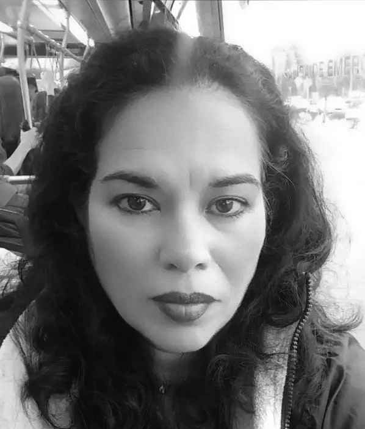

Soy Y. Carmen Rodríguez Bravo, escultora contemporánea con raíces venezolanas y españolas. Mi obra reinterpreta la figura de las Meninas de Velázquez, explorando temas como la maternidad, la identidad y los vacíos emocionales. Trabajo con materiales tradicionales como la piedra de Villamayor y la madera, fusionándolos con formas modernas para crear un diálogo entre pasado y presente. A través de mis piezas, cuento historias de amor, enseñanza y conexión, destacando el papel de las mujeres como portadoras de herencia cultural y emocional.